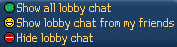
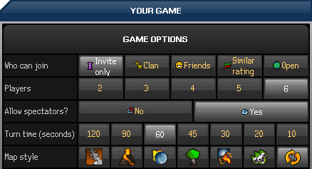

")
1. How do I use the FunOrb chat box?
Chatting in FunOrb is a major part of the game and you'll find that there are many ways to keep in touch with your friends and interact with other players. You can chat by simply typing into the chat box.
The chat box is available during online multiplayer games, and can be found at the bottom of the game window. Here you will see any messages you send or receive. If you find yourself being sent a lot of messages, you might find it useful to adjust what types of message you want to receive.
The four buttons along the right side of the FunOrb screen control how you interact with the chat system. Lobby, Game and Private are effectively chat filters, and Report Abuse gives you the ability to report players who break any of the Rules of Conduct.

The Lobby, Game and Private buttons each open up a small menu:



By clicking on any of the above options, you can filter what information appears in your chat box. Hiding your lobby or game chat will ensure that only your friends can speak to you, but hiding your private chat will make you appear offline to all players.
Reporting Abuse
The Report Abuse button is your means of reporting any player in FunOrb that is being abusive towards another player or is breaking one of our rules.
When you spot such behaviour or language, click on the Report Abuse button, correctly type in the offending player's name and then select one of the rules they have broken. You can find out more about reporting abuse by clicking here.
We will receive your abuse report and take action against the player immediately. If we find out that you are abusing the system, though, then action will be taken against you instead.

The Quick Chat feature enables you to talk quickly and clearly in a variety of situations. You can access normal Quick Chat by simply pressing the 'F10' key on a new line in the chat window, or clicking the Quick Chat icon next to your name at the bottom of the chat window.
When you have selected Quick Chat, you will see a menu appear in your chat window that has a selection of chat categories. These open out into a variety of options:

You can click on these headings to open subsections to help you construct sentences. The 'General' category contains choices for responses (yes, no, etc), hellos and goodbyes, mood, smileys and banter. The 'Inter-game' category allows you to arrange games on either FunOrb or RuneScape.
You can select one of these categories by clicking on it, or pressing the letter it corresponds to. So, if you wanted to make a general comment, for example greeting someone, you would first press 'G' to open 'General', then 'H' to open 'Hello', then '1-5' to select what you want to say. Each of the categories will open out into a subcategory to refine what you want to say. You can continue to click on the options or press the relevant keys.
Quick Chat hot keys:
- Backspace: Move back to the previous level
- Home: Return to the top level of the menu
- F9: Auto-respond to the last thing in your chat window
- F10: Open the Quick Chat menu
- F11: Repeat the last thing you said
- Esc: Close the Quick Chat menu
In FunOrb, having friends can come in handy. It's no wonder: making friends from all over the world is fun and exciting. To help you manage your friends, you have been given a Friends list and an Ignore list, which can be found in each multiplayer game's lobby.

The friends list allows you to keep in contact with the friends you make in all Jagex games, including RuneScape!
To add a friend to your list, click on the button marked "Add friend", and type in the name of the person you want to add. You can also add a friend by right-clicking their name in the chat window, lobby player list or the game player list, and selecting the appropriate option.
After you have added a person to your friends list you will be informed whenever your friend logs in or out of a Jagex game (unless their privacy settings block this - see the chat functions, above). Players on your list who are currently playing on the same server as you are shown in green, people who are playing but on a different server are shown in yellow, and players who are not currently playing on a multiplayer server are shown in red.
You can also send a private message to a person on your list that is currently playing. Just click on the player's name or line of chat, select 'Send private message to (player name here)', and type in the message you want to send. To remove someone from the list, click on the "Remove friend" button and type in the name of the person you want to remove. Alternatively, you can click on the player's name and select 'Remove friend' from the menu.

If there is a particular player you do not wish to receive messages from, put their name on your ignore list.
To do this, click on the button at the bottom marked "Add name" and enter the name of the person you wish to block.
You can also add players to your ignore list by right-clicking their name in the chat window and selecting the appropriate option.
To remove someone from the list, click on the "Remove name" button and type in the name of the person that you want to remove.
There are two types of multiplayer games in FunOrb – unrated and rated. In unrated games, a player can define a set of options for a multiplayer session and invite their friends to join. Rated games are played against a random selection of players, so you are limited to the options you can alter, and friends cannot join your game.
The main lobby screen is automatically set to show all available multiplayer games. From here you can join or spectate an existing game, or create your own unrated game.

Rated Games
In order to be placed on the ranking tables in multiplayer games, you will need to play rated matches. The more matches you win, the higher your rating will be.
To prevent players gaining an unfair advantage, we choose your opponents when you play rated games - so you won't be able to play against your friends in this mode. You can, however, still define certain game options, depending on your personal preferences.
Here is an example of the Arcanists rated game options. The options available to you will depend on the game you are playing.

Unrated Games
Unrated games do not count towards your personal rating, but they are much more customisable than rated games: you can specify game options, invite your friends or RuneScape clan members, allow similarly rated players to join, or even leave the game open to anyone.
It is important to note that when creating or joining a multiplayer game, you will join a game much faster if you have fewer options defined. To join a game in the quickest time, set all available options to ‘don’t mind’.
When your friends are on the same server and are waiting in the lobby to start a game, you can click on their names in the friends list to invite them to your game. Remember, all players you can invite (including any friends who are in the lobby) will be shown in the 'Invite Players' popup.
